The physics behind the tools
Where a card claimed a mechanism, we ran the calculation. Two rounds: a partially-coherent imaging study for the stepper, and four design calcs for the rest.
Printing 130 nm is not free. The Abbe simulation says i-line 365 nm passes zero diffraction orders at 130 nm dense pitch (cutoff 358 nm — contrast is exactly 0), and even KrF 248 nm with conventional illumination manages only 0.15 contrast at k₁ = 0.33. What rescues the node is annular off-axis illumination: two-beam imaging at contrast 0.40, NILS 1.25, with aerial depth-of-focus pushed beyond ±2 µm. "i-line for non-critical layers, KrF plus off-axis for critical ones" is diffraction physics, not a cost choice.
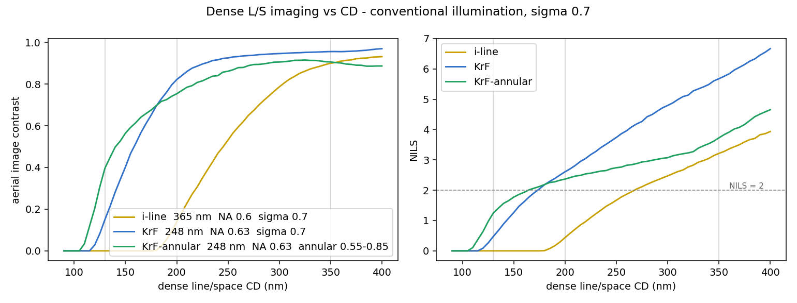
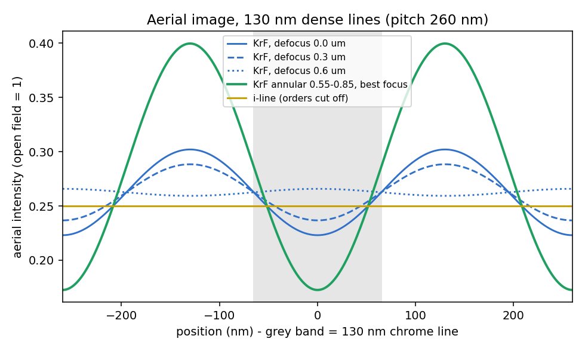
Round two imaged the actual chip. A 6% attenuated phase-shift mask lifts NILS from 1.25 to 1.69 and exposure latitude from 11% to 15% — but MEEF at k₁ = 0.33 is 2.79, so every mask CD error lands on the wafer nearly tripled. Then a 5 × 5 µm clip of MB-1's signed-off poly GDS went straight through the same imaging model: across 392 real gate samples, single-dose printing with no OPC leaves a +13 nm mean bias with a 35 nm (1σ) proximity spread, pulls line ends back by 29 nm (p95: 90 nm), and drops a few slivers entirely — while bridging nothing. OPC and phase-shift masks are not polish; they are the steps that cancel exactly these entries.
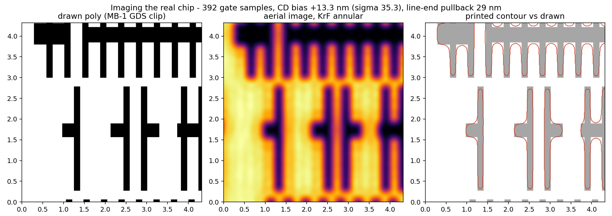
Round three closed the loop. With the process locked — same annular source, same dose calibration — twelve ILT-style pixel iterations corrected only the mask: CD spread fell from 35 to 5.9 nm, line-end pullback from 29 to 4.6 nm, and all fourteen lost slivers came back. The best part is in the corrected mask itself: hammerheads grew at the line ends on their own. Nobody wrote that rule — it is the imaging physics' own solution to cancelling pullback, rediscovered by the loop.
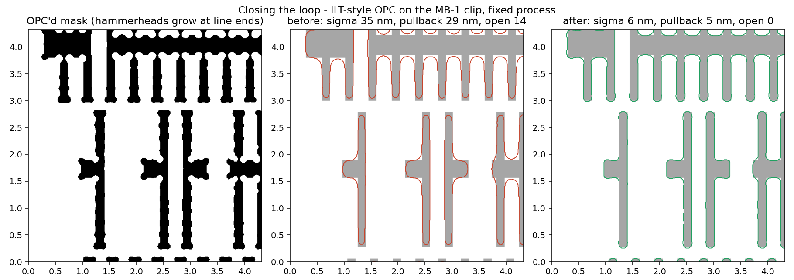
Round four pushed the light into the resist. Silicon reflects 53% at 248 nm, printing 70 nm-period standing waves into the film; a transfer-matrix scan lands the anti-reflective coating at 108 nm, crushing residual reflectivity to 0.5% and the dose-vs-thickness swing from 0.48 to 0.06. A Dill-exposure / acid-diffusion / Mack-development chain then grows the actual resist profile: 84.6° sidewalls with 1.4 nm edge ripple under BARC and a 30 nm bake diffusion — strip the BARC and the same recipe pays 14% more dose while the sidewalls scallop at triple the ripple.
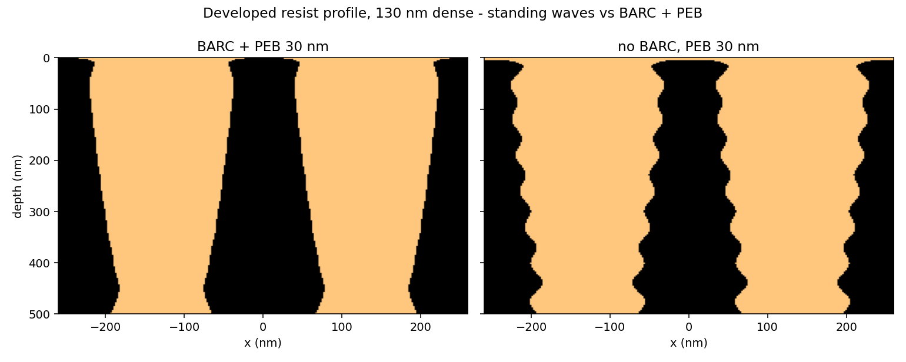
Round five put the mask itself on trial. Every round above treated the reticle as an infinitely thin transmission function — but a real 4× mask is 73 nm of chrome standing on quartz. An in-house RCWA solver (the rigorous-coupled-wave engine behind commercial mask-3D tools, validated to machine precision against Fresnel and to 1.0 in energy conservation) diffracted the real stack: order amplitudes land within 3.4% of the thin mask, phases within 5°, and at the wafer that prices out to a −14 nm best-focus shift plus a 1.4% dose error. Verdict: Kirchhoff holds at 130 nm / 4× — the foundation under every result above is sound, and mask 3D becomes a first-class citizen only at high-NA and EUV.
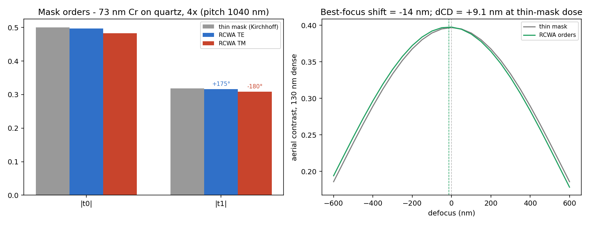
Round six specified the lens — and then measured one. Injecting Zernike aberrations into the imaging pupil prices each milliwave at the wafer (with a lesson en route: dense lines are immune to coma shift, so the honest coma metric is iso-dense placement). The budget lands at coma 7.7, astigmatism 19, spherical 8.8 mλ — 5.5 mλ RMS combined, ≈ λ/181, thirteen times tighter than the usual "diffraction-limited" λ/14. Zemax OpticStudio, driven headless through the ZOS-API, then optimized a naive 8-element all-silica 4× objective to convergence: at NA 0.63 it reaches 896 mλ — 163× off spec. That gap is the entire reason real DUV objectives are twenty-plus-element, ten-million-dollar monsters.
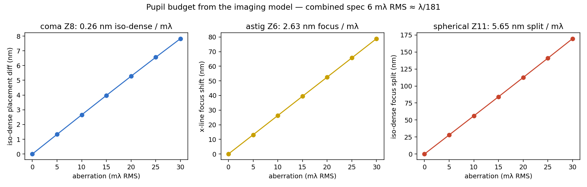
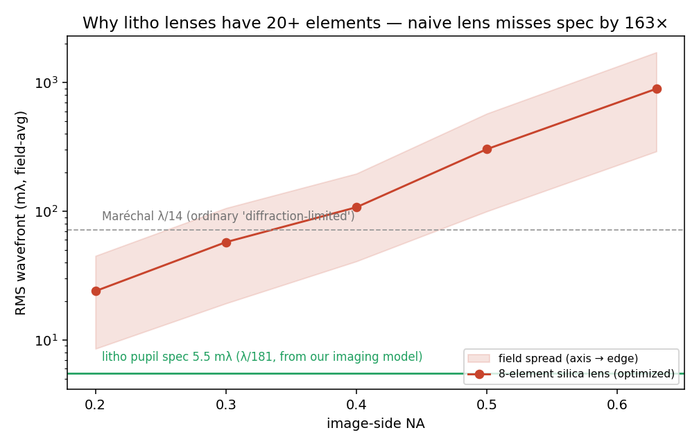
And then the line ran a real job. A dry-run tapeout pushed the word MARS — an actual GDS, drawn in a polygon font — through the whole flow: mask, annular imaging, dose-to-size, OPC, resist. First silicon failed honestly: the font carried a 90 nm neck in the M (half the process minimum), the printed letter broke in two — and the EPE metric never noticed (12.4 nm, unchanged); only a topology count caught it. A DRC-driven respin at 280 nm strokes printed all four letters clean at EPE 12.7 nm. The drill's real product is its gap list: layout DRC, topology-aware metrology, mask rule checks, 3D resist, etch transfer — the next roadmap, discovered by taping out.

Then the drill's gap list got worked off. A layout DRC now exists (minimum width by erosion-split — the naive morphological opening false-flags every right-angle corner; learned the hard way), and run against the v1 layout it flags twenty sub-130 nm junctions — the print had broken exactly at the worst one. A topology metrology (breaks / bridges / missing) catches what EPE cannot, locating the M break precisely. And an anisotropic etch-front model carries the resist profile into the film through three limit gates: ideal RIE inherits the resist's footprint (154 = 154 nm, 90° walls), isotropic undercut matches film depth (295 ≈ 300 nm), and selectivity bookkeeping closes (128 ≈ 130 nm). Production point: the 130 nm resist line lands in the film at 138 nm, 90° sidewalls, with 372 nm of resist to spare. The word is in the film now.
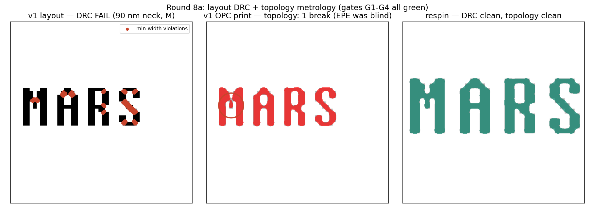
Two more unit processes joined the ledger. Thermal: Deal-Grove oxidation gated on its own asymptotics and a textbook anchor (wet 1000 °C/1 h: 435 vs ~410 nm), and the round-2 implant profile annealed into real junctions — 224 / 262 / 319 nm at 950/1000/1050 °C — after the dose-conservation gate caught a plain Gaussian leaking up to 21% of the implant out of the wafer (the surface needs a reflecting boundary). CMP: a Stine pattern-density model over the real MB-1 metal-1 density map puts within-die post-polish variation at 176 nm — comfortable against this node's >±2 µm depth of focus. And the fill-cell counterfactual dissected a slogan: metal-1 owes its uniformity to the power grid, while on poly the 54k decap cells lift the emptiest density bins tenfold — fill is first about uniformity; CMP is only one of its motives.
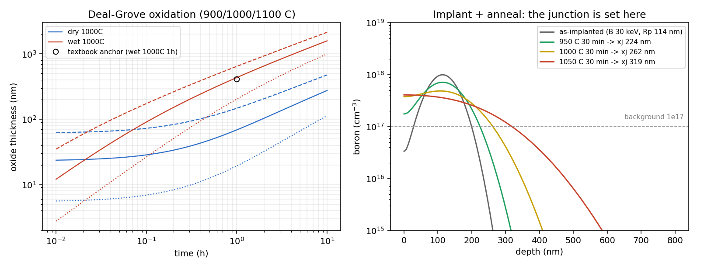
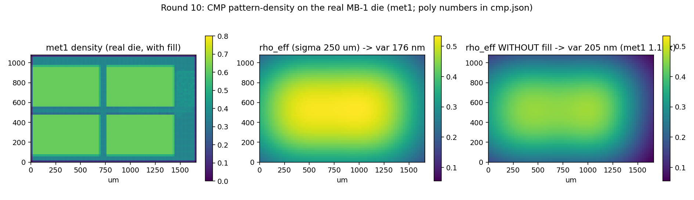
The last ledger pages: statistics, deposition, metrology. Yield beyond Poisson: at the same D₀ = 6.4/cm², defects arriving eight to a cluster lift a hypothetical 10× die from 31.8% to 84.7% — clustering is merciful — and the Monte Carlo taught its own lesson: the statistical family follows the clustering mechanism (compound clusters give a rescaled Poisson; regional variation gives the negative binomial; force-fitting NB yields a scale-drifting α). Deposition: line-of-sight sputtering leaves 24% coverage at the bottom of an AR-2 trench — exactly the view factor, 0.244 vs 0.243 — while the low-sticking CVD limit conforms at 0.88. And the CD-SEM got an image-formation model: edge bloom, 3 nm spot, shot noise, σ_CD 1.04 → 0.34 nm under 16-frame averaging, following 1/√N as metrology should.
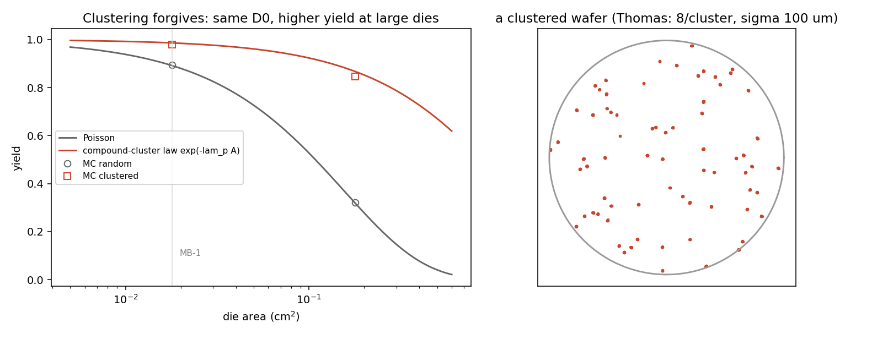
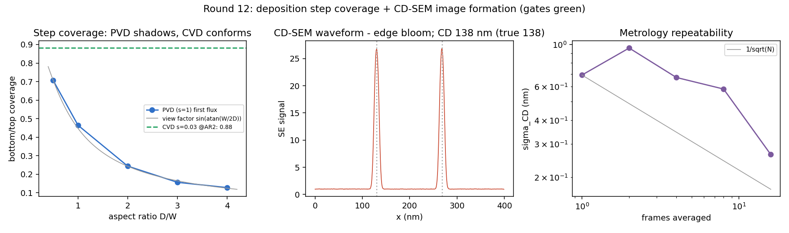
Then the back end closed its own books. Dicing got a chip-budget model: per-grit engagement δ = feed/(rpm × grits), backside chipping growing by the indentation-fracture scaling c ∝ δ^(2/3) — at 10 mm/s the chip p95 is 19.7 µm, so the 30 µm kerf plus both chip margins uses 69.4 µm of the 80 µm street, with 14.3 mm/s as the ceiling. Wire bonding got a process window: the 25 µm Al wedge deformation ratio lands in r ∈ [1.2, 1.8], 4.3 gf of pull at center — above the 3 gf spec, below the 7.5 gf wire break — and a unit-slip lesson: a stray ×1000 briefly gave the wire a 7,505 gf "break strength", which is exactly why the sanity gate carries an upper bound.
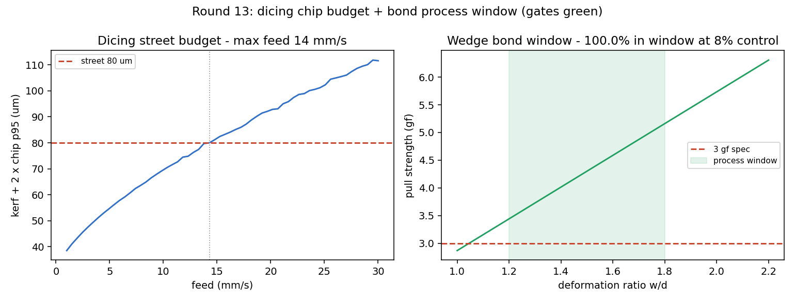
And the other machines got their numbers too. First-order LSS ranges put boron at ~114 nm for 30 keV and ~311 nm for 100 keV (checked against SRIM anchors: B/P within 11%, As reads +27% high — a declared bias of the first-order model). The Dolan shadow geometry, evaluated at the scene's own tilt, shows why junction trimming exists at all: holding a 0.5% area spread by geometry would need the tilt repeatable to 0.054°. And the wall screen's wafer map inverts, through a Poisson model, to a defect density of 6.4 /cm² — at which a die ten times MB-1's size would yield only 32%.
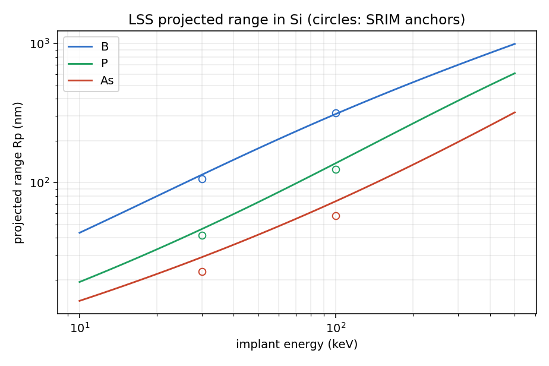
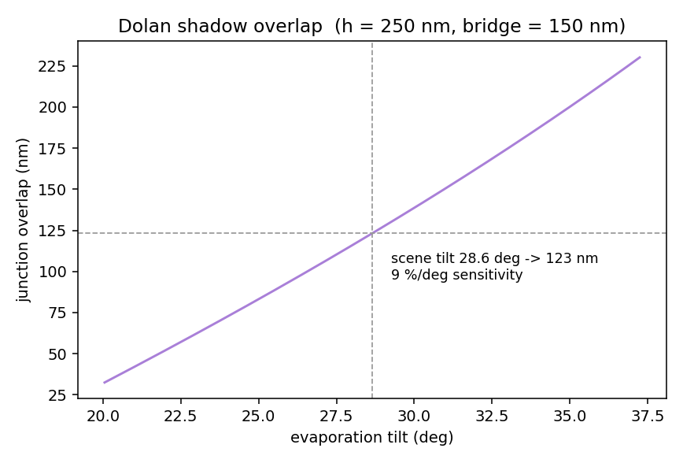